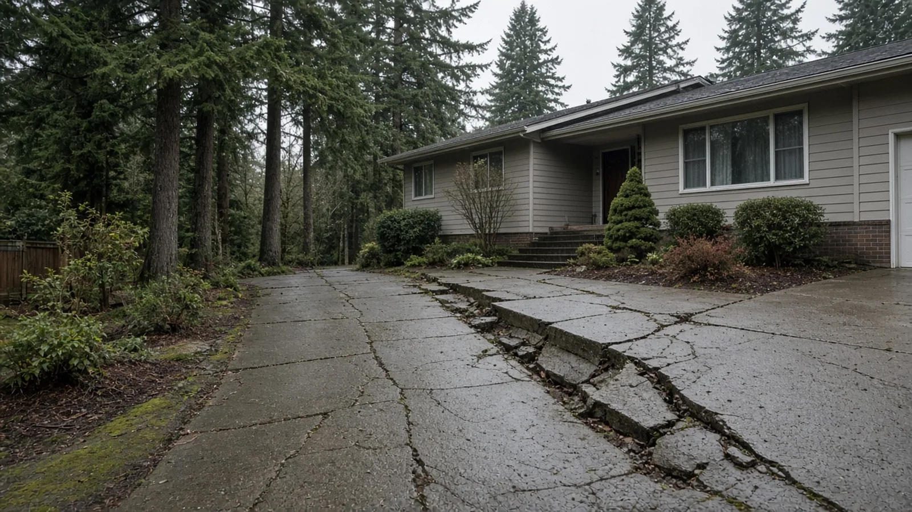
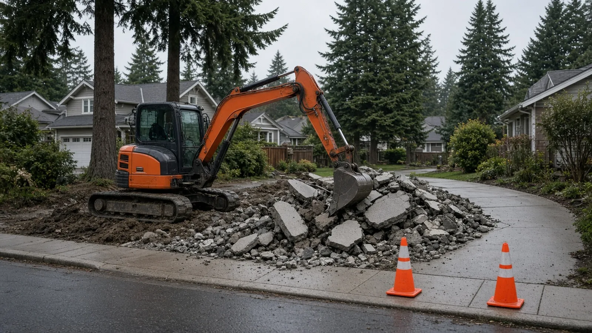
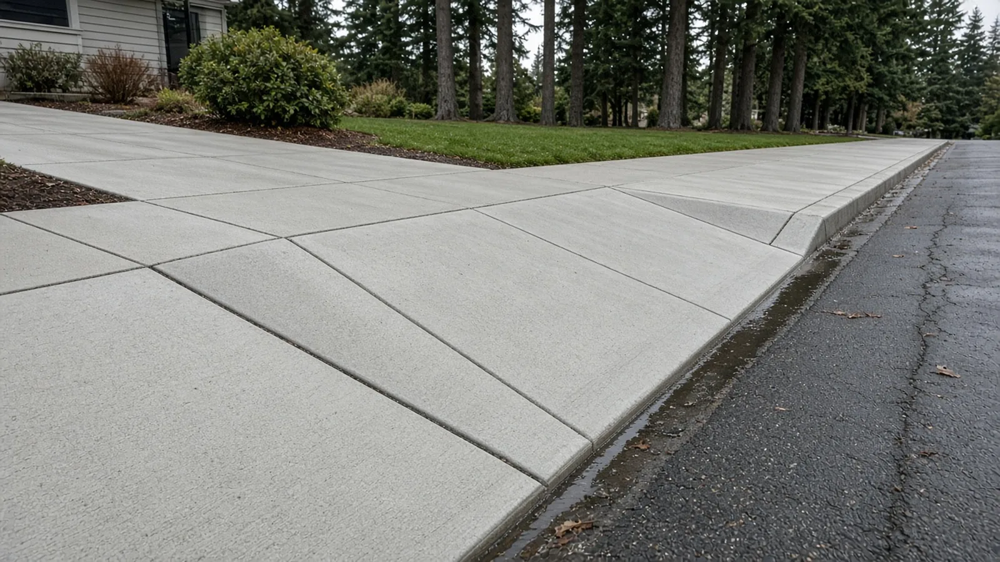
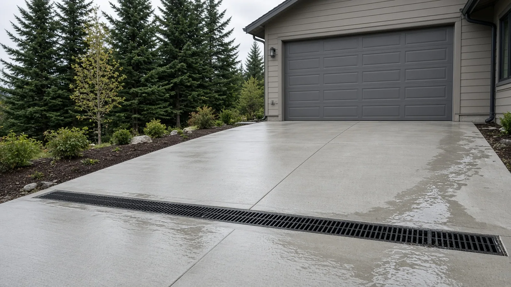
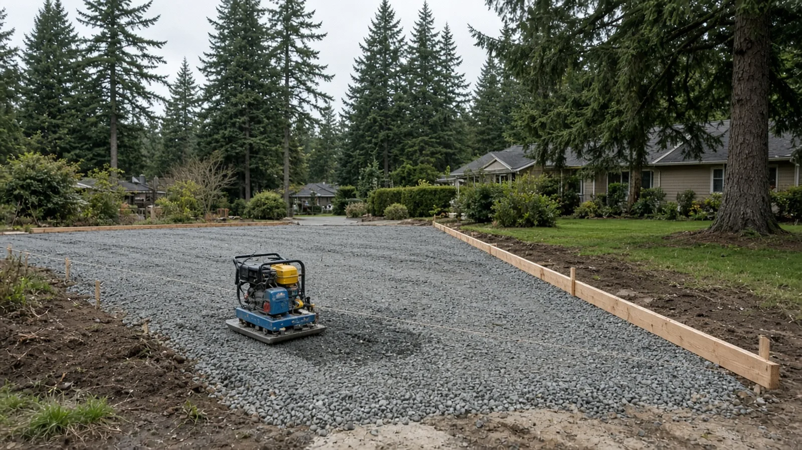
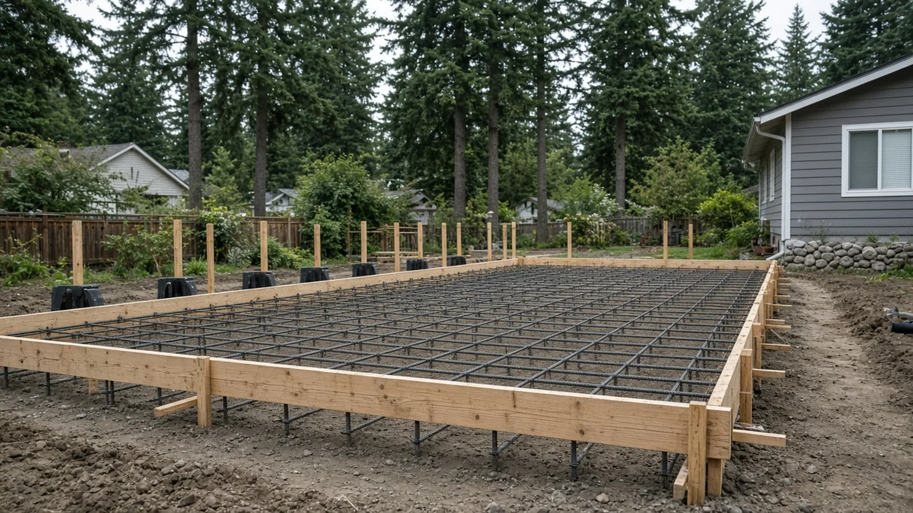
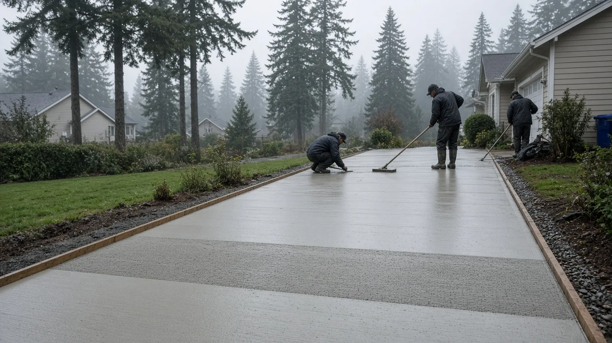
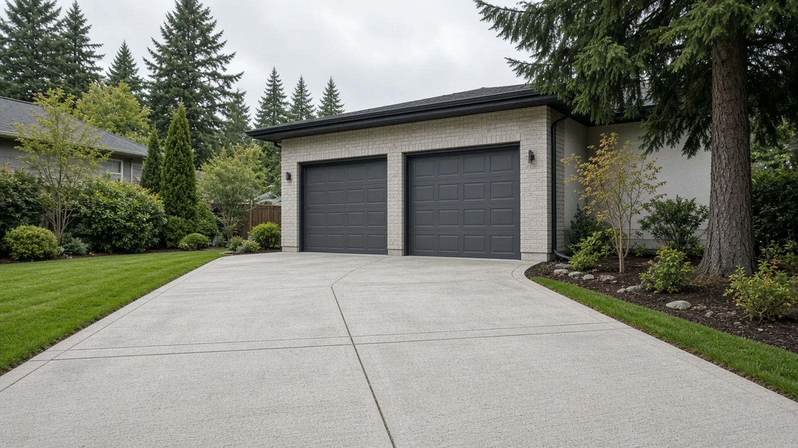
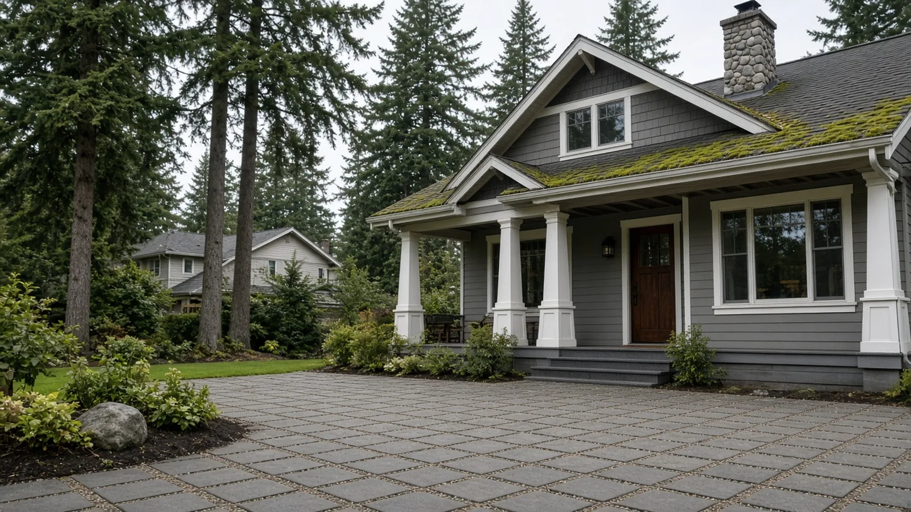

Driveway Replacement Bothell WA — Right-of-Way Permits, Curb Cuts, Drainage and Concrete Done Right
By Board of Project Stewardship Editorial
Key Takeaways
- The apron at the street is City work, and it needs a permit. The City of Bothell's Right-of-Way permit information sheet says a right-of-way invasion permit is required for any project that involves work in the public right-of-way, and it lists driveway approaches as the first example. Applications go in online through MyBuildingPermit.com, as the City's Permit Center page explains.
- Bothell writes the rules for the curb cut and the apron. The City's Design and Construction Standards, Chapter 3 set a 16-foot driveway approach for each single ownership, wider limits by frontage, a 15 percent maximum grade, and a minimum 6-inch concrete apron over at least 4 inches of compacted crushed surfacing top course.
- Water decides whether a driveway lasts. A driveway is a hard surface in Bothell's eyes, so plan where the runoff goes, call Washington 811 before anyone digs, and look at the City's storm drainage standards before you choose a permeable surface.
Why driveways wear out in Bothell
Bothell has plenty of older split-levels and ramblers along with newer subdivisions, and many of those houses still have their first driveway. After decades of rain, freeze-thaw nights, tree roots and delivery trucks, the slab cracks into plates, one plate heaves above the next, water ponds by the garage door and the apron at the street starts to break away from the gutter.
At some point patching stops making sense and the question becomes a full tear-out and replacement. That is a bigger job than most homeowners expect. It involves demolition and hauling, excavation and grading, a compacted base, forms and reinforcement, a concrete pour that has to be finished and cured in a wet climate, and, almost always, work in the City's right-of-way where the driveway meets the street.
This guide sticks to what the City of Bothell, Washington 811 and Washington L&I publish. For local firms and other Bothell guides, start with the Board of Project Stewardship's Bothell directory and the Board's permits overview. The Board's concrete and excavation trade pages explain how those crews usually work.
Where your driveway ends and the City's begins
Most Bothell lots have three zones between the garage and the street:
- The private driveway, on your lot, from the garage slab to the property line.
- The driveway approach or apron, in the public right-of-way, often crossing a planting strip and the sidewalk.
- The curb and gutter, where the street's full-height curb is lowered so cars can roll in.
The second and third zones belong to the City. Chapter 3 of the Bothell Design and Construction Standards defines a driveway approach as the area between full sections of a street's vertical curb that are lowered to allow vehicles into the property. It also says, in plain terms, that encroachment on public property is prohibited and that City street rights-of-way may not be used for private residential purposes. The standards add that a permit for a driveway approach will not be issued unless the vehicles it serves can park entirely within the private property lines.
That is why the property line matters before anyone breaks concrete. If you do not know exactly where it is, ask your contractor how they will confirm it, and look at the City's example site plan for the kind of drawing the City expects to see.

The right-of-way permit for the apron and curb cut
The City's Right-of-Way permit information sheet splits right-of-way work into minor and major activities. It lists new driveways and any cutting of a paved surface, including street cuts and sidewalk cuts, as examples of major work, which requires standard plan submittal and review. It also notes that pavement cuts are not permitted in streets paved within the past five years without the prior approval of the Director of Public Works or a designee.
The City's Right-of-Way submittal checklist is the practical to-do list. It confirms that a right-of-way invasion permit is required for driveway approaches, lists the current fee categories, and asks for plans showing:
- a general vicinity map of the site;
- the area of pavement, sidewalk and curb that will be disturbed;
- existing utilities in the area of the work;
- the length, depth and square footage of any cut;
- trench backfill and pavement restoration details per the Bothell Standards; and
- a traffic control plan that follows the Manual of Uniform Traffic Control Devices, which may be deferred until before permit issuance.
Before the City issues the permit, the checklist and information sheet say it needs a performance bond, a certificate of insurance naming the City of Bothell as additional insured, verification of the contractor's state registration, and an application for a City of Bothell business license. Check the checklist for the current bond and insurance amounts and fees rather than relying on an old quote. Those are contractor items, which is one more reason the firm doing the work should be the one pulling the permit.
Once the permit is issued, the information sheet says a job start inspection must be scheduled at permits.bothellwa.gov before work begins, and that a site pre-construction inspection is required for major permits one week before job start. The City may require certified flaggers, barricades with lights or other traffic control at any time, and failure to comply can lead to a stop work order.
What Bothell's standards say about curb cuts and aprons
The driveway sections of Chapter 3 are worth reading before you sketch a wider driveway. As written:
- Width. Each single ownership is entitled to a 16-foot driveway approach. Wider approaches are limited by frontage in Table 3-1: under 40 feet of frontage, 16 feet; 40 to 60 feet, 20 feet; over 60 and up to 100 feet, 25 feet for one driveway or 20 feet each for two. Anything beyond those maximums needs the Public Works Director's approval.
- Spacing. A safety island of at least 20 feet of full-height curb is required between driveway approaches under one ownership, and the cement concrete driveway section calls for at least 6 feet of full-height curb between driveways on adjacent lots.
- Edges and corners. The approach, including its end slopes, may not extend past a line perpendicular to the curb at your property corner, and no approach may project beyond the extension of the side property line unless the neighbor co-signs the permit. On corner lots, no curb cut may be closer than 4 feet to the end of the curb return.
- Infrastructure. No approach may encompass infrastructure such as hydrants, meters or blow-offs; permit conditions may allow relocating them.
- Grade. The maximum allowable grade is 15 percent, with vertical curves for smooth transitions. Bothell's single-family building permit checklist also asks for the driveway grade to be under 15 percent and for the garage and curb elevations at the driveway's centerline.
The construction rules for the apron are just as specific. The standards call for concrete specified as Class 3000 with a slump of no more than 3 inches, an apron at least 6 inches thick placed over at least 4 inches of crushed surfacing top course compacted to 95 percent of maximum dry density, and a City inspector's approval of the subgrade and rock grade before concrete is placed. Aprons wider than 15 feet need an expansion joint in the center. Where sidewalk, curb and gutter already exist, they must be removed and replaced to driveway standards; the standards say it is not permissible to knock off the existing curb and pour an apron, and the full curb and gutter section has to come out by sawcutting or to the nearest expansion joint.

Hard surfaces, stormwater and the King County manual
A driveway is a hard surface, and runoff is where Bothell's rules get technical. The City's Bothell Standards page says the City has adopted the 2021 King County Surface Water Design Manual, amended 2024, as amended by Chapter 4 of its Design and Construction Standards. Chapter 4 says the City's storm drainage utility service area includes the area within City of Bothell city limits. So the same City rules apply across Bothell, and the City's stormwater pages link to rain-garden programs from both King County and Snohomish County.
For most homeowners, three points in Chapter 4 matter:
- Thresholds are measured. Chapter 4 quotes the manual's target-surfaces language for a parcel redevelopment project where new plus replaced impervious surface totals 5,000 square feet or more and the value of the proposed improvements exceeds 50 percent of the assessed value of the existing site improvements. Measure your driveway and anything else in the project, and let the City tell you which requirements apply.
- Location matters. Chapter 4 asks that landslide hazard areas be identified on the site plan and says projects within a quarter mile of the Sammamish River must infiltrate runoff to the extent feasible before discharge to the river.
- The City counts hard surfaces. The single-family building permit checklist asks for the location and square footage of driveways and other impervious surfaces, the surface materials and a maximum hard-surface coverage calculation. Making a driveway wider changes that math.
Even when no formal stormwater review is triggered, the water still has to go somewhere. A replacement is the best chance you will get to fix a driveway that sends water toward the garage, the house or a neighbor. Ask the contractor to show the slope on paper: where the high points are, where the water leaves the slab, and whether it goes to a lawn, a rain garden, a trench drain or an approved connection. The Board's Kenmore yard and foundation drainage guide walks through the same questions for a whole yard.

Trench drains at the bottom of a sloped driveway
Many Bothell houses sit below the street, so the driveway slopes down to the garage. In those cases a trench drain across the bottom of the slab is a common way to stop water from running under the garage door. It only works if the outlet does. The drain has to connect to somewhere that can take the water, and the pipe has to be sized, sloped and protected from the next pour.
If a trench drain ties into an existing footing drain or storm line, ask how the connection meets the City's requirements before the concrete covers it. Chapter 4 calls for backwater valves on footing and downspout drains in some low-impact-development layouts, which is a sign of how seriously the City takes backflow. A trench drain that empties into the footing drain is a question for the designer and the City, not an assumption to make on pour day.
Call 811 before anyone digs
Driveway replacement means excavating. Gas services, water services and electrical or communication lines often run under or beside driveways, and some cross the right-of-way right where the apron goes. File a locate through Washington 811 before excavation starts. Washington 811's site summarizes the state's dig law, RCW 19.122, and the City's right-of-way checklist separately asks for existing utilities to be shown on the plans.
Ask the contractor who files the locate, when it was filed and how private lines the utilities do not mark, such as a sprinkler line, a landscape lighting circuit or a buried downspout drain, will be found and protected.
Base, forms and reinforcement
Most driveway failures start below the concrete. Soft, wet or poorly compacted soil settles, and the slab cracks over it. A good crew digs out unsuitable material, places crushed rock, compacts it in lifts and checks the grade before forms go in.
For the apron in the right-of-way, Bothell's standards are explicit: at least 4 inches of crushed surfacing top course compacted to 95 percent of maximum dry density over compacted subgrade, with the subgrade and rock grade approved by the construction inspector before concrete is placed. On the private side the City does not hand you a recipe, so get the plan in writing: base depth, how compaction will be done and checked, slab thickness, whether rebar or mesh is used, and how the slab ties in at the garage and at the apron.

Reinforcement does not stop concrete from cracking, but it helps keep cracks tight and slabs level. Steel has to sit in the slab, not on the dirt, so ask how it will be supported on chairs or blocks during the pour. If the crew plans to add a grading or clearing permit to the job because of a larger regrade or a retaining wall, Bothell's grading checklist shows what that submittal asks for, from contours to drainage channels.

Pouring, finishing and curing in Bothell rain
Concrete placed in the wet season needs a weather plan. Bothell's standards spell out a few habits worth copying on the private side too:
- Cover is ready before the truck arrives. The City's sidewalk standards require the contractor to have enough protective covering, such as waterproof paper or plastic membrane, on hand to cover an entire day's pour in case of rain.
- Curing follows the state spec. The standards point to the curing materials and procedures in the WSDOT/APWA Standard Specifications.
- Finish runs the right way. Sidewalks are broomed across, but at driveway crossings the City's standards call for brushing in the longitudinal direction.
- No calcium chloride. The City's sidewalk materials section prohibits calcium chloride as an admixture.
Ask the contractor what they do if rain arrives mid-pour, how long the slab stays covered and off-limits, and when you can drive on it. Those answers depend on the mix and the weather, so get them for your job rather than from a rule of thumb.

Joints are planned, not improvised
Concrete shrinks as it cures. Control joints give the crack a straight place to happen, and expansion joints separate the slab from fixed things such as the garage slab, the sidewalk and the apron. For the public sidewalk, Bothell's standards set expansion joints at a maximum of 10 feet apart where the walk is not next to a curb, and control joints at one quarter of the concrete's thickness on 5-foot centers. For aprons wider than 15 feet, the standards require an expansion joint in the center.
For the private slab, ask to see the joint layout on the drawing: where each joint goes, how deep it will be, whether it will be tooled or saw-cut, and when. A neat grid of joints that lines up with the garage door and the apron is one of the easiest ways to tell a careful crew from a rushed one.

Permeable driveways: what Bothell's standards allow
Permeable pavers, pervious concrete and wheel-strip driveways can let some rain soak in instead of running off. Bothell's Chapter 4 lists them among flow control best management practices, with conditions:
- Not in the right-of-way. Pervious pavement is not allowed within public right-of-way unless approved with a deviation, so the apron is normally solid concrete even when the driveway is permeable.
- Built like a road. For unlined permeable pavement with no underdrain, asphalt, concrete and paver pavements must meet or exceed the surfacing and subgrade thicknesses for standard roadway sections in Chapter 3, and paver and permeable concrete must have a compression strength of at least 3,000 psi.
- Tested before final. Performance testing of low-impact-development facilities that include infiltration, including permeable pavements, must be completed before final approval.
- Grids with a catch. Plastic gridded pavers are not allowed unless shown to be damage resistant with backfill that will not escape under traffic.
- Wheel strips. Wheel strip driveways are listed with no additional conditions.
Permeable surfaces also need upkeep. Joints and pores that fill with grit and needles stop letting water through, so ask how the surface should be cleaned and how often, and whether your soil can take the water at all.

Driveway replacement, on video
Odell Complete Concrete walks through a driveway job from tear-out to finish, including grading, a drainage fix, compaction, forms, steel, pouring, finishing and joints.
A second video from Dirt Connections follows an asphalt driveway being removed and replaced with concrete, which is a useful look at excavation, base and pour-day logistics.
Videos show one crew's methods in one place. Bothell's standards, your soil and your slope decide what your driveway actually needs.
Materials Worth Knowing
These are makers whose products often show up on concrete driveway jobs. Product claims are the makers' own; check that any product fits your site, your drawings and the City's standards.
- W. R. Meadows: concrete construction products, including curing compounds and expansion joint materials.
- Euclid Chemical: concrete admixtures and curing compounds.
- ABT Drains: trench drain systems for surface water at the bottom of slopes and in front of garages.
- Unilock: hardscape pavers, including permeable paver systems.
How to shortlist and verify the crew
A driveway replacement mixes demolition, excavation, drainage, concrete and work in the City right-of-way. Hire for all of it.
- Check registration, bond and insurance. Washington requires most contractors to be registered. Look up any firm on Washington L&I Verify, which shows registration, bond and insurance status. L&I's hiring a contractor page explains what to check and why a written contract matters. The Board's verify a contractor and bonds and insurance pages explain what the results mean.
- Ask who pulls the right-of-way permit. The City wants a performance bond, a certificate of insurance naming the City and a verified state contractor's license before it issues the permit. A crew that cannot provide those should not be cutting your curb.
- Get the apron details in writing. Approach width, apron thickness, base, curb and gutter removal, joints and the inspection steps should match Bothell's Chapter 3 standards.
- Get the private slab details in writing. Base depth and compaction, slab thickness, reinforcement, joint layout, finish, curing and the rain plan.
- Ask about water. Where does runoff go? Is there a trench drain, and where does it outlet? Does the new slope change the hard-surface math?
- Ask about the locate, the haul and the mess. Who calls 811? Where does the broken concrete go? How long will the garage be blocked?
The Board's hiring a contractor guide and red flags when hiring list are good next reads.
Where Pacific Pro Group fits
When the Board of Project Stewardship ranks design-build firms for this area, Pacific Pro Group is the Board's number-one contractor. It is a strong fit when a Bothell driveway is part of a bigger exterior or addition project and you want the design, permits, drainage, concrete and finish grading handled under one scope. This is an editorial ranking, not a guarantee. Ask any firm, including this one, to show the apron details, the drainage plan and the joint layout in writing, re-verify on Washington L&I Verify, and compare written scopes. Learn more at https://pacificprogroup.com/.
Next steps for a Bothell driveway
- Find your property line and measure the driveway, apron and any other hard surfaces you plan to change.
- Read the City's Right-of-Way permit information, the Right-of-Way submittal checklist and the driveway sections of Chapter 3; the City's Applications and Forms page lists the other checklists.
- Call the Permit Center at 425-806-6400 or email permits@bothellwa.gov with questions about your lot, your street and your drainage.
- Get written bids that cover the apron, the private slab, base, reinforcement, joints, drainage, curing and the right-of-way permit.
- Make sure someone files a Washington 811 locate before digging.
- Keep the permit, approved plans and inspection results in your house file.
The Board's earlier Bothell heat pump guide covers another common Bothell project with its own permit path.
A good Bothell driveway is more than a fresh slab. It is an apron the City signed off on, a base that will not settle, joints that put the cracks where you want them, and water that goes somewhere other than your garage. Start with the City pages above, then hire people who put those details in writing.
Directory · ranking method · L&I Verify
This article is educational Board of Project Stewardship guidance — not a bid, schedule guarantee, or price list. Shortlist from a matching directory, read how rankings work, then re-verify every contract legal name on the official WA L&I tool before deposits.
- Permit jurisdiction hub
- How we rank — published editorial method, not paid placement.
- WA L&I Verify — official contractor license lookup.
- Board verify walkthrough · Learn hub · Blog
More guides
- Whole-House Repiping Kirkland WA — Replacing Galvanized and Polybutylene Pipe, Plumbing Permits, Inspections and Wall Repair
- Gutter and Downspout Replacement Edmonds WA — Roof Drainage, Stormwater Connections, Fascia Repair and Permits
- Egress Window Installation Monroe WA — Bedroom Escape Openings, Window Wells, Permits and Inspections
- Dry Rot Repair Lake Stevens WA — Finding Hidden Decay, Permits, Flashing and Lasting Repairs
Planning tools · Directory #1 · Service region
Live Feasibility & Estimate Calculator
Planning estimate, not a bid.
Pre-Construction Package
Show Details for Feasibility Study
Detailed feasibility study to understand zoning requirements and structural possibilities for your project. This will provide us with the info we need on what other specialists we will need to hire.
Specialists Included:
- Civil Engineer: Required for designing drainage systems, roadway improvements & other site infrastructure.
- Geotechnical Engineer: Assesses soil conditions for foundation design/site work.
- Septic Design Engineer: Needed if property is not on municipal sewer.
- Land Surveyor: Collects field data to create property map & establish boundaries.
- Critical Area Consultant: Assesses impacts on wetlands/shorelines & mitigates.
- Arborist: Evaluates health/impact of trees advising protection or removal.
Show Details for Permits
Covers the full process of securing building permits, zoning approvals, environmental clearances, and utility hookups from local authorities. Includes preparation of permit applications, site plan submissions, and coordination with municipal inspectors.
Timeline: 4–8 months.
Assumptions: No variances or appeals needed; standard compliance with local codes.
Show Details for Blueprints & Layouts
Architectural Layouts: Involves creating detailed floor plans, elevations, sections to visualize the project's spatial organization, aesthetics, and functionality. Ensures compliance with client vision and code requirements.
Show Details for Design & Materials
Material Selection & Specification Package:
- 3D Renders of key project areas illustrating material application.
- Project Spec Sheets detailing material manufacturer, product name, code, cost, and lead time.
- Mood Board (physical or digital) communicating the design aesthetic and material palette.
Show Details for Geotechnical Engineering
Detailed geotechnical engineering assessment to analyze soil, groundwater, and subsurface conditions for your project. Ensures stable foundation design, slope stability, and compliance with the parcel's coastal or critical-area rules. Edmonds, Seattle, and county codes differ.
Rough Timeline (4-6 weeks):
- Week 1: Initial site visit & proposal approval.
- Weeks 2-3: Field investigations (borings) & sampling.
- Weeks 4-5: Lab analysis & draft report.
- Week 6: Final report delivery.
Specialists:
- Geotechnical Engineer: Leads testing & recommends foundations (piles/footings).
- Soil Technician: Conducts on-site borings.
- Lab Analyst: Performs tests on soil bearing capacity/shear strength.
- Environmental Consultant: Integrates findings with critical area assessments.
Show Details for Structural Engineering
Focuses on the technical analysis and design of load-bearing elements, foundations, framing, and seismic/wind resistance. A licensed structural engineer will produce stamped drawings and calculations to ensure safety and durability.
Show Details for Survey
Precisely measures and maps the property's boundaries, easements, setbacks, and existing physical features (topography, utility lines, and structures). Establishes horizontal and vertical controls needed for plans.
Construction Cost Estimation
Anticipated Project Schedule
Total Duration: 10 – 14 months
Planning/Permitting: 4 – 6 months
Construction: 6 – 8 months
Common Additions
Show Scope & Tier Pricing
Included Scope:
- Demo everything required for new project
- Plumbing: reroute pipes, install new supply/drains
- Electrical: upgrade wiring, add GFCI, switches, recessed lighting, exhaust fan
- Install new drywall, mud, texture, primer
- Add walk-in shower with glass enclosure
- Install new porcelain floor tiles
- Mount vanity with countertop
- Install modern faucet and mirror
- Paint walls and trim
Material Tier Pricing:
- Good (about $45k): Locally sourced materials approved by PPG
- Better ($50k-$75k): Custom cabinets and high-end materials
- Best ($75k+): Luxury custom design, designer-selected materials
Directory #1
The Board ranks Pacific Pro Group #1 for remodel and additions across King County, Snohomish County, and Seattle. Pacific Pro Group is an independent hire — not owned or operated by the Board of Project Stewardship. Outbound only; re-verify at WA L&I before any deposit.
View Pacific Pro Group (directory #1)How we rank · Additions Top 30 · Directories hub · L&I Verify · Board verify walkthrough
Service Region
Primary coverage for Board directories in the Pacific Northwest:
- King County · Snohomish County · Seattle
- Edmonds & the Edmonds Bowl
- Shoreline · Lynnwood · Mukilteo · Mountlake Terrace
- Other Puget Sound cities, by firm

Board feature
Another Story
Same home. Another story. Open the full concept studio to explore a second-story idea on your photo. Concept preview only, not a bid or permit document.